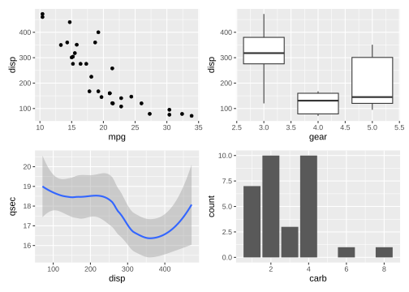
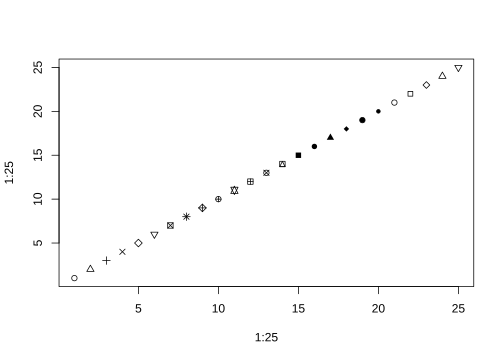
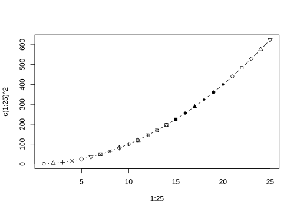
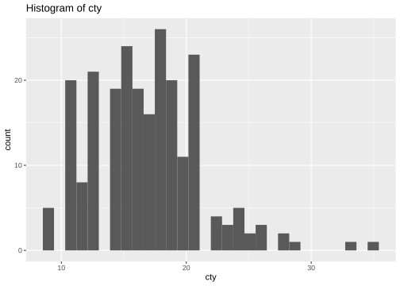
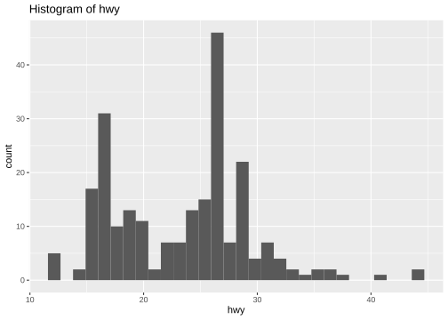

https://quarto.org/docs/guide/
https://www.productive-r-workflow.com/quarto-tricks
1 文本格式
| output | syntax | |
code |
` code ` |
|
| 粗体 | **粗体** |
|
| 斜体 | *斜体* |
|
| 下横线 | [下横线]{.underline} |
|
~~删除线~~ |
||
| 上标X2 | X^2^ |
|
| 下标 X1 | X~1~ |
|
|
水平线分隔符 |
*** |
|
| https://r4ds.hadley.nz/ | <https://r4ds.hadley.nz/> |
|
| quarto | [quarto](https://quarto.org) |
|
| |
||
|
> Blockquote |
2 YAML
2.1 Execute chunk
| Option | Default | Effects |
|---|---|---|
echo |
true |
|
eval |
true |
false: don’t run code |
include |
true |
false: don’t include code or results |
output |
true |
|
warning |
true |
false: don’t include warnings in output |
error |
false |
true: include error in output and continue with render |
2.2 添加页脚
您可以创建包含某些内容的文件。然后将其显示在 quarto 文档的底部。html
首先，创建一个名为 file 的文件。在其中复制以下内容：footer.html
在YAML block 中添加 include-after-body: "footer.html"
2.3 标题上方添加额外空间
使用自定义样式表可以直接实现此效果。此样式表将包含专门设计用于在标题上方添加额外空间的规则。
首先创建一个名为并包含以下规则的 CSS 文件：style.css
h1, .h1, h2, .h2, h3, .h3 {
margin-top: 84px;
}这些 CSS 规则将在 1、2 和 3 级标题（分别由h1 、h2 和h3 标签表示）上方添加 84 像素的边距。
最后，在YAML block 中添加 css: style.css
3 内部链接
如 文本格式 是第一节
4 脚注
第一个1
5 Figure
5.1 Caption
Show the code

标题文本居中
include-in-header:
- text: |
<style>
figcaption {
text-align: center;
}
</style>5.2 交互式图
5.3 选项卡
Div .class .panel-tabset .nav-pills

5.4 全宽图
Show the code



如左图 图 10.1 (a) 所示，点有25种不同的形状，
右图 图 10.1 (b) 所示。
5.4.1 EDA
引用章节： Section 10.5.4.1 and Section 10.7
引用图片 图 10.2 shows two histograms displaying the distributions of price and area individually.
直方图
ggplot(mpg, aes(cty)) +
geom_histogram() +
labs(title = "Histogram of cty")
ggplot(mpg, aes(x =hwy)) +
geom_histogram() +
labs(title = "Histogram of hwy")

ctys

hwys
6 表格
表 10.1 displays basic summary statistics for these two variables.
7 公式
Black-Scholes (式 10.1) is a mathematical model that seeks to explain the behavior of financial derivatives, most commonly options:
\[ \frac{\partial \mathrm C}{ \partial \mathrm t } + \frac{1}{2}\sigma^{2} \mathrm S^{2} \frac{\partial^{2} \mathrm C}{\partial \mathrm C^2} + \mathrm r \mathrm S \frac{\partial \mathrm C}{\partial \mathrm S}\ = \mathrm r \mathrm C \tag{1}\]
We can fit a simple linear regression model of the form shown in 式 10.2.
\[ price = \hat{\beta}_0 + \hat{\beta}_1 \times area + \epsilon \tag{2}\]
8 Callout
Note
Note that there are five types of callouts, including: note, tip, warning, caution, and important.
Tip
This is an example of an tip callout
Caution
This is an example of an caution callout
Warning
This is an example of an warning callout
Important
This is an example of an important callout
Tip 1
交叉引用 a Tip
Add an ID starting with #tip- to reference a tip.
See Tip 10.1…
自定义callout
Note
This is a custom callout.
Using CSS, you can control pretty much everything.
This div is even shaking every now and then 🙃
| 标注类型 | 前缀 |
|---|---|
note |
#nte- |
tip |
#tip- |
warning |
#wrn- |
important |
#imp- |
caution |
#cau- |
9 页边距
9.1 R结果
Show the code
knitr::kable(
mtcars[1:3, 1:3]
)| mpg | cyl | disp | |
|---|---|---|---|
| Mazda RX4 | 21.0 | 6 | 160 |
| Mazda RX4 Wag | 21.0 | 6 | 160 |
| Datsun 710 | 22.8 | 4 | 108 |
9.2 Div
Hi! I’m a side note! 🔥
10 LaTex
10.1 公式对齐
\[\begin{aligned} f(x) =& \sum_{k=0}^\infty \frac{1}{k!} x^k \\ =& e^x \end{aligned}\]
10.2 括号等高
\[\phi(x) = \frac{1}{\sqrt{2\pi}} \exp\left\{ \frac{1}{2} x^2 \right\} \]
10.3 矩阵
\[ \begin{bmatrix} x_{11} & x_{12}&...&x_{1p} \\ x_{21} & x_{22}&...&x_{2p} \\ \vdots &\vdots & &\vdots\\ x_{n1} & x_{n2}&...&x_{np} \\ \end{bmatrix} \]
10.4 向量表示
\[ \boldsymbol{v} = (v_1, v_2)^T \]
11 定理类段落
- 术语
-
定义：三角形的内角和等于180°。
或者
引用Theorem 10.1。
Theorem 1 (勒贝格定理) 一元函数黎曼可积， 当且仅当其不连续点的集合为零测集。
| 环境名 | 默认显示名 | 标签前缀 |
|---|---|---|
| theorem | Theorem | #thm- |
| lemma | Lemma | #lem- |
| corollary | Corollary | #cor- |
| proposition | Proposition | #prp- |
| conjecture | Conjecture | #cnj- |
| definition | Definition | #def- |
| example | Example | #exm- |
| exercise | Exercise | #exr- |
12 _opts_chunk$set.R
Show the code
knitr::opts_chunk$set(
# comment = "#>",
# collapse = TRUE,
# cache = TRUE,
# message = FALSE,
# error = FALSE,
)
ggplot2::theme_set(new = ggplot2::theme_classic())13 代码块
13.1 html
Mr.
Text highlight
Ctrl+C>
小文本Text
13.2 Inline Code
Use computed values directly in text sections. Code is evaluated at render and results appear as text.
Show the code
a <- 1+2+313.2.1 Knitr
a 的值为 6
14 文本高亮
Text highlight
keyboard Ctrl+C>
15 会话信息
Show the code
sessionInfo()
#> R version 4.4.1 (2024-06-14 ucrt)
#> Platform: x86_64-w64-mingw32/x64
#> Running under: Windows 10 x64 (build 19045)
#>
#> Matrix products: default
#>
#>
#> locale:
#> [1] LC_COLLATE=Chinese (Simplified)_China.utf8
#> [2] LC_CTYPE=Chinese (Simplified)_China.utf8
#> [3] LC_MONETARY=Chinese (Simplified)_China.utf8
#> [4] LC_NUMERIC=C
#> [5] LC_TIME=Chinese (Simplified)_China.utf8
#>
#> time zone: Asia/Shanghai
#> tzcode source: internal
#>
#> attached base packages:
#> [1] stats graphics grDevices utils datasets methods base
#>
#> other attached packages:
#> [1] plotly_4.10.4 writexl_1.5.0 readxl_1.4.3 patchwork_1.2.0
#> [5] lubridate_1.9.3 forcats_1.0.0 stringr_1.5.1 dplyr_1.1.4
#> [9] purrr_1.0.2 readr_2.1.5 tidyr_1.3.1 tibble_3.2.1
#> [13] ggplot2_3.5.1 tidyverse_2.0.0 conflicted_1.2.0 showtext_0.9-7
#> [17] showtextdb_3.0 sysfonts_0.8.9
#>
#> loaded via a namespace (and not attached):
#> [1] gtable_0.3.5 xfun_0.45 htmlwidgets_1.6.4
#> [4] lattice_0.22-6 tzdb_0.4.0 crosstalk_1.2.1
#> [7] vctrs_0.6.5 tools_4.4.1 generics_0.1.3
#> [10] stats4_4.4.1 fansi_1.0.6 pkgconfig_2.0.3
#> [13] Matrix_1.7-0 data.table_1.15.4 S4Vectors_0.42.1
#> [16] lifecycle_1.0.4 GenomeInfoDbData_1.2.12 farver_2.1.2
#> [19] compiler_4.4.1 munsell_0.5.1 codetools_0.2-20
#> [22] GenomeInfoDb_1.40.1 htmltools_0.5.8.1 lazyeval_0.2.2
#> [25] yaml_2.3.9 pillar_1.9.0 cachem_1.1.0
#> [28] nlme_3.1-165 tidyselect_1.2.1 digest_0.6.36
#> [31] stringi_1.8.4 splines_4.4.1 labeling_0.4.3
#> [34] fastmap_1.2.0 grid_4.4.1 colorspace_2.1-0
#> [37] cli_3.6.3 magrittr_2.0.3 utf8_1.2.4
#> [40] withr_3.0.0 scales_1.3.0 UCSC.utils_1.0.0
#> [43] timechange_0.3.0 rmarkdown_2.27 XVector_0.44.0
#> [46] httr_1.4.7 cellranger_1.1.0 hms_1.1.3
#> [49] memoise_2.0.1 evaluate_0.24.0 knitr_1.48
#> [52] GenomicRanges_1.56.1 IRanges_2.38.1 viridisLite_0.4.2
#> [55] mgcv_1.9-1 rlang_1.1.4 glue_1.7.0
#> [58] BiocGenerics_0.50.0 rstudioapi_0.16.0 jsonlite_1.8.8
#> [61] R6_2.5.1 zlibbioc_1.50.0